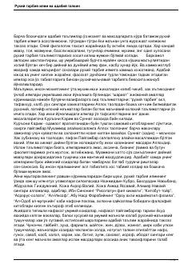

РТAdabiy ta'lim va ruhiy tarbiya ilmining o'zaro bog'liqligi hamda ma'naviy-axloqiy asoslari tahlili.
Mazkur asar адабий таълим ва руҳий тарбия илмининг ўзаро боғлиқлиги, ислом манбалари ва маънавий-ахлоқий қадриятларнинг бадиий талқиндаги ўрнини ёритиб беради. Олий филологик таҳсил жараёнида диний ва дунёвий илмлар уйғунлиги ҳамда уларнинг тарбиявий аҳамияти илмий-адабий нуқтаи назардан таҳлил қилинади.